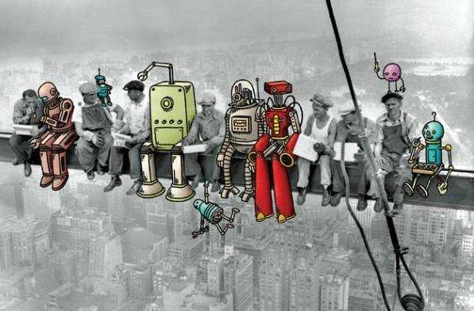

收录于合集
内容提要
全球化 的演进在推动全球经济社会发展的同时，也造成了全球发展失衡加剧、贫富差距和分配不公增大、国内社会矛盾和治理危机上升、风险全球化加重等问题。特别是随着新科技革命的发展和经济一体化的加速，全球化的基本内涵、发展动力、聚焦点及治理体系都在发生新的变化，全球化正处于新的深化调整进程中。全球化发展的失衡及其负面效应不仅助推了民粹主义的全球性复兴和转向，而且给世界政治秩序带来许多新的不确定性因素。为此，中国应当通过推进国家治理现代化、构建新型全球化、推动全球治理变革等战略安排，积极增扩全球化深化之利，避免民粹主义极端化之害。
关键词: 世界政治 全球化 民粹主义 治理危机 国家治理 全球治理
全球金融危机爆发后，西方发达国家出现了明显的反全球化倾向，国际社会对全球化进程逆转的忧虑不断增加。特别是近年来，随着民粹主义的全球性复兴，全球化的发展走向再次成为国际社会关注的焦点。民粹主义所表现出来的反全球化态势，在很大程度上不仅反映了全球化的负面效应正在凸显和外溢，也意味着全球化的发展已经遭遇到前所未有的阻力和压力，并且面临着新的深化与转型。在当今全球体系深刻调整的大势下，把握全球化的这一深化进程既有助于审慎辨别全球化的利弊得失，也有助于理性认识全球民粹主义复兴的动因，为有效应对民粹主义提供启示与思考。
 1
一、全球化的双刃效应及其新的深化进程
全球化 本身是一把双刃剑，它既给全球经济社会发展带来了福音，也造成了诸多消极后果。但是，在当今民粹主义的话语中，正是全球化的失衡“孕育”了极端民粹主义，也助推了极右翼政治力量的地区性崛起。从全球整体态势看，逆全球化尚未形成全球化发展的主要趋势，全球化整体上依然处于深度调整的进程之中。
（一）全球化的积极成效
２０世纪７０年代特别是冷战结束以来，全球化有力地推动了全球经济社会发展。世界经济的持续增长、社会发展水平的提高、国际政治合作与相互依赖的不断深化、全球公民社会的逐步成长、国际文化交流的不断深入，都反映了这一时期全球化演进的显著成就和重大影响。
第一，世界经济持续增长与经济一体化快速发展。 德国海德堡大学经济学教授埃克塞尔?德勒埃（ＡｘｅｌＤｒｅｈｅｒ）利用全球化指数对１２３个国家１９７０—２０００年的数据进行分析后指出，全球化明显促进了经济增长，全球化程度越高的国家经济增长率更高。在保持政治稳定的前提下，经济全球化还将更有效地促进经济增长。最新一轮的全球化表明，世界各国经济相互依赖不断深化，为世界性或区域性经济一体化的发展注入了强劲动力。而经济一体化的发展，又为世界经济持续增长提供了重要保障，促进了新科技革命和全球经济创新，也创造出前所未有的社会财富。
第二，全球社会不断进步与全球公民社会快速成长。 世界经济的持续增长为各地区和各国社会进步奠定了坚实的物质基础。在工业化和现代化的推动下，人类健康生活水平不断提高，全球贫困问题大幅度改善。在城市化快速发展的刺激下，世界诸多传统社会或完成向现代社会的转型，或处于转型的进程中。新科技革命驱动下的全球信息网络与交通技术，使人类社会实现持续而广泛的全球互动，推动了全球意识、共识和价值的逐步形成。国际组织特别是非政府国际组织的崛起，更是造就了有别于国际社会的“全球共同体”，反映了全球化时代更深刻的社会进步。更加尊重人权和发展人权事业，更注重保护弱者并深化福利保障体系，更注重全球共同利益、命运和责任的“全球公民社会”快速成长，使同心打造人类命运共同体成为可能。
第三，国际政治合作深化与全球政治日趋制度化。 经济全球化使国际行为体不断突破主权国家范畴，营造了一种利益相互交织、竞争与合作共存的新环境，各国需要相互借重、谋求合作，总体上维持良性竞合关系。冷战结束后，国际政治互动不断深化，各种地区和全球政治网络蓬勃发展，政治议程不再局限于安全防务等传统问题，而是扩展到经济、社会和生态等问题，通过新的多边政治形式，缔造一个涵盖多元主体的全球政治。随着国际规则体制和全球政治互动的加强，全球政治日益制度化。全球治理的紧迫现实也反映了国际政治的深刻变化，推动着国际格局的重组和新的国际秩序的生成。
第四，世界文化多样化增强和文化交流不断深入。 全球化进程必然促进人口的自由迁移，带来新观念、新宗教和新信念的流动。随着社会交往广度和深度的扩展，特别是文化交流在全球层面的深入，世界文化的多样化增强。在信息化网络化推动下，局限于少数精英和有限范围的传统文化交流被打破，代之以前所未有规模、强度、速度和数量的全球文化交流，使人们感受到其他文化观念的持续影响。逐渐增强的多元文化社会既是一种客观现象，也是社会治理的某种政策反应，顺应了人类文明进步过程中交流与互鉴的常态。但多样世界并不必然带来和谐，文化霸权和文化同质化依然为诸多国家所忧虑，并使人们越来越意识到文化之间的差异，甚至引发亨廷顿所言的文明冲突的恐惧。
**
**
（二）全球化的负面影响
全球化在推动全球经济社会发展的同时，也滋生了新的等级关系和不平等现象，全球发展失衡加剧、贫富差距和分配不公增大、国内社会矛盾激化、国家冲突风险上升、国家治理危机和风险全球化加重等负面影响也日益显现。
第一，加剧了全球发展失衡。 当前的经济全球化以新自由主义为理论指南，主张“私有化、市场化和自由化”等经济政策，实质是极端的市场原教旨主义。受此影响，秉持新自由主义的“华盛顿共识”在世界各地大行其道，它不仅充分释放了资本主义的逐利本性，而且助推了新一轮经济全球化的深入发展，快速积累起巨额财富并创造了前所未有的经济繁荣。但这种不公正且缺乏节制的全球化内嵌失衡的因子：即使其净收益可能为正，但参与者之间的收益分配严重不均，日益成为令人不安的现象。当前收入分配不公、不断加剧的贫富分化正逐渐成为新的全球性挑战，这不仅发生在南北国家之间，还存在于各国内部各阶层之间。特别是西方发达国家普遍出现了财富不平等问题，并呈现出逐步扩大的趋势。虽然世界财富的分配从来就没有完全平等过，但全球化加剧了贫富分化的状况，凸显了其加剧失衡的负能量。
第二，激化了国内社会矛盾。 不平等与再分配问题历来是政治冲突的核心，也是社会危机的重要根源。当前，各国社会内部矛盾激化正成为一种全球性现象，长期以多元文化社会自豪的西方社会更是被各种愤怒、仇恨和不安的情绪所笼罩，严重地削弱着西方社会的安全感和信任感。从历史上看，当某些群体利益在经济全球化进程中受损时，社会内部往往会出现排斥和撕裂等极端社会现象。在分配不公的驱使下，许多低收入群体对精英阶层、都市居民乃至外来族裔报以本能的怨恨，诸多全球化“输家”也会对精英阶层表现出各种抵触情绪。而社会全球化的深入发展，特别是世界人口发展失衡和全球人口加速流动，既冲击了维持经济增长所必需的人口结构，还危及社会发展所需要的社会认同。这种经济焦虑与身份焦虑的深度缠绕并突破经济逻辑，更是刺激到精英阶层对国家特性的忧虑，使社会矛盾日趋激化，也孕育着民粹主义复兴的社会基础。
第三，增加了各国冲突风险。 全球化和相互依赖的加深，并不必然带来国家稳定和社会和谐。人们频繁而深入的全球互动，既可能增加相互利益的汇合点，也会诱发甚至提高彼此冲突的潜在风险。２０世纪９０年代以来全球贸易争端申诉案件逐渐增多的趋势表明，经济相互依存与国际经济摩擦具有很强的相关性，凸显了经济全球化的复杂利益关系。经济全球化的深度发展甚至还会触发并扩大不同程度的“国家风险”，人口流动带来的跨国犯罪、认同危机等诸多问题，更是滋长了各种不满，并使有关国家陷入新的紧张关系。在缺乏有效的全球治理的情况下，置身全球化进程中的世界各国的冲突风险前所未有地增加并复杂化。
第四，加重了国家治理危机。 经济全球化推动了全球范围的市场化改革，也助推了第三次民主化浪潮，造就了一批所谓的新型民主国家。民主全球化并不必然带来善治，也不预示着民族国家的终结，但国家的权力、角色和功能被重构、重组及重新安排却是事实，国家不得不进行制度改革。因此，处于“国家建设”进程中的国家往往遭遇更大的全球化压力，也容易陷入国家治理危机。一些西方发达国家及其政治家们则自恃其民主政治已得到巩固，漠视全球化削弱国家自主性的普遍风险，偏离维持政治责任和改善国家治理的历史逻辑，热衷于以“失败国家指数”“民主指数”等评点指责他国，罔顾自身政策杠杆能力弱化、回应民众政策需求困难等风险，甚至“不合时宜地”陷入国家治理危机。
第五，助推了国家风险的全球化。 尽管全球化不等于同质化，但经济一体化客观上推动了全球经济社会生活的节奏和频率“共振”。无论是地方性问题还是全球性问题，都能在国家、地区和全球之间相互流动并广泛传播，使任何置身全球化的国家都难独善其身，国内或地方性问题可以扩散为全球性问题，全球性问题也可能不断渗入国内。近年来，全球性挑战的日益增多，在很大程度上正是源自国内风险和地方性问题的不断全球化。对世界各国来说，应对风险的全球化与驾驭全球化的风险同样重要。尽管风险并不意味着危机，但风险全球化的不可预知性却增加了全球不稳定性，也凸显了全球有效治理的重要性和紧迫性。
（三）全球化正处于新的深化进程
２１世纪以来，随着新科技革命的发展和经济一体化的加速，特别是全球化与反全球化两种正反力量的持续较量，引发全球社会对全球化进程的深思。总体看来，全球化的发展动力、基本内涵、聚焦点及其治理体系都在发生着新的变化，全球化正处于新的深化进程中。
一是全球化的推动力出现重要转变。 尽管全球化进程涉及复合的因果逻辑和扩张趋势，但资本主义无疑是最显著的推动力之一。在资本主义扩张逻辑内部，由于第三次科技革命的突破性发展，经济全球化背后的技术形态已发生重大转变。新兴金融资本取代工商业资本主导经济全球化发展，使世界经济日益金融化和虚拟化。高新信息化科技企业取代传统制造企业成为主导性的跨国企业，冲击着世界各经济体的产业结构和就业结构。随着西方国家“去工业化”与发展中国家工业化的推进，新的全球经济格局逐步形成。新兴经济体崛起和区域自由贸易安排，开始取代西方发达国家和全球自由贸易成为推进全球化发展的新动力，新兴市场国家更是成为全球增长的主要贡献者。特别是全球金融危机并没有从根本上改变全球化发展大势，这在很大程度上得益于新兴经济体的强大动力和努力托举。这孕育了西方发达国家对失去全球化主导权的焦虑，并为它们应和所谓“反全球化”的“民意”埋下伏笔。
二是全球化的内涵得到更大拓展。全球化首先表现为经济一体化，但又不限于经济内涵，特别是２０世纪９０年代后半期以来，人们从关于是否存在全球化的争论，逐步转为从全球的角度回应全球化这一事实。全球化已不再单指连接世界不同地区的技术创新和经济力量，而是不断推动各国经济、政治、文化乃至意识形态的外溢与互动，基本内涵大为拓展。随着经济、政治、文化、人口流动以及生态系统等扩张趋势日益交汇，全球化进程日趋复杂并伴随不断增加的全球性挑战。技术创新周期的加速推动了全球经济竞争日趋激烈，全球经济治理日益紧迫，而全球社会的不断发展，则使追求社会正义成为多数国家的共识。利益深度交织和权力关系网络化，促使各国更加借重国际机制和规则商定国际事务，数百年来以“枪炮之战”为主调的国际竞争关系开始转向新型的制度之争。
三是全球化的重点转向区域层面。 长期以来，经济全球化基本上表现为全球性框架和区域性合作两大支柱并重，两者保持着良性互动关系。２０世纪９０年代以来，关贸总协定向世界贸易组织转型和欧共体向欧洲联盟升级，反映了两大支柱的共同发展，特别是自由贸易原则的普遍接受，世界贸易组织等全球性框架发挥了重要作用，推动了全球经贸投资的长足发展。自２００８年全球金融危机爆发以来，多边贸易自由化陷入低潮，区域集团化趋势趋强，世界主要经济体贸易保护主义措施明显增多，各种自由贸易区呈现碎片化发展趋势。当前各主要经济体都在经营本地区或跨地区“集团化”进程，东盟主导的区域全面经济伙伴关系尤为引人注目，反映出经济全球化重点正在发生重要转向，并在一定程度上增加了“逆全球化”的风险。
四是全球治理体系面临深刻变革。 尽管自冷战结束以来的全球化进程是在没有世界政府的治理框架中推进，但事实上以美国主导的自由主义国际秩序为重要依托，并受到这一秩序的一系列国际规则体制的约束，因此，全球化的积极成效和消极影响都与之息息相关。近年来，日趋严峻的全球经济与安全形势表明，自由主义国际秩序正陷入治理危机，有失公正合理的全球治理体系正陷入制度性困境，推动全球治理体系变革越来越成为国际社会的共识。尽管西方发达国家提供国际公共物品的意愿减退、变革全球治理体系的意愿有限，但国际力量对比的深刻变化特别是近年来新兴大国群体性崛起，使全球经济治理不断发生深刻调整，全球治理变革成为大势所趋。五是全球化面临国际体系转型的压力。全球化与国际体系存在互为因果的内在联系，全球化的发展推动国际体系转型，而国际体系的转型也可能中断全球化进程。随着发展中国家深入参与，由西方国家主导推动的全球化进程被逐步打破，不仅如此，全球金融危机的爆发也激起发展中国家变革国际秩序的愿望和深化全球化的强烈呼声。新兴大国的群体性崛起，全球化的深度调整与国际力量对比的深刻变化，确实反映了国际体系多极化的趋势更加明显，但国际体系整体上依然处于多极化的进程之中。特别是由于西方发达国家总体拒斥变革并力图护持其主导地位，国际体系的转型并不简单。这种持久的不稳定性将给全球化带来深远冲击，甚至为反全球化提供活动空间。
2二、全球化深化进程中民粹主义的重要转向
立足全球化的深化进程有助于深刻理解和把握全球民粹主义的复兴。目前，西方世界出现的民粹主义现象与思潮不仅凸显了西方政治秩序的衰微，还意味着民粹主义开始发生重要转向。裹挟着反全球化和反精英民主的诉求，民粹主义特别是右翼民粹主义，正在嵌入西方政治的实际运行过程，给世界政治秩序带来诸多新的不确定性因素。
第一，复杂的多元原因。 民粹主义作为一种周期性的复发现象，一般出现在社会转折期，并常常在新的社会历史条件下与新的社会问题相结合。每当一国经济社会处于转型期，民粹主义就存在滋生的条件，而当下的新民粹主义不仅与全球化同步，还与第三波民主化浪潮叠加，致使经济、社会与政治等因素深度交织。随着世界各国在经济、社会乃至政治过程与结构上日趋一致，特别是全球化持续施加各种负面冲击，各国国家治理开始出现不同程度的危机，许多新型民主国家甚至西方民主国家纷纷受困于政治秩序的衰微。这种共时性的国家治理危机的出现，凸显了全球化内嵌的某种“共振”机制，也把“现代国家建设”这一重大课题摆到了西方决策精英面前，并引发世界性的深刻反思。西方社会普通大众夹杂着各种失落感和愤怒感，率先掀起了新一轮民粹主义浪潮。
第二，极端的政策主张。 民粹主义往往坚持极端的政策主张，提倡“平均主义”，鼓吹“道德至上”，宣扬“反智主义”，主张“直接民主”，热衷“激进运动”。其偏于“左”倾还是右倾，在很大程度上与经济发展的好坏有着密切联系，经济向好但分配不公往往滋生左翼民粹主义，而经济衰退则容易催生右翼民粹主义。随着西方经济持续衰退，全球化的各种负面影响不断加剧，加上国家治理危机的影响，右翼民粹主义得以借势崛起。反对外来移民和多元文化的社会文化政策、反对经济全球化和自由贸易的经济贸易政策、反对体制精英和富裕阶层的自由民主体制，构成了当前欧美右翼民粹主义的主要政策主张。这些主张被极右翼政党采纳并与极端民族主义结合，以民主的旗号“反民主”“反全球化”，推动意识形态之争，不断冲击着西方的传统政治格局。
第三，多样的表现形式。 民粹主义从根本上是国家治理危机的产物。各国国家治理危机的不同程度和全球化的不平衡对各国不尽相同的冲击，导致新民粹主义展现出各种不同的形式。在美国，“否决”政治的危害把社会公众对国会政体的满意度降至历史的低谷；“占领华尔街”运动堪称越战之后最引人注目的高度政治化的抗议活动；２０１６年的总统大选更是把美国社会的分歧完全暴露出来，助长了自由民主体制下的政治极化。在欧洲，英国“脱欧”不仅刺激了西方世界内部的各种分离主义，而且直接冲击欧洲一体化前景，引发区域政治“再国家化”的潜在趋势；意大利公投则代表了欧盟治理困境下自利民族主义的某种回潮。在欧洲大陆和日本，极右翼政党的普遍强势崛起和种族排外主义的泛起，使传统政党政治秩序有动摇之虞。可以说，政府失能、政治极化、分离主义、区域政治“再国家化”、右翼崛起、种族排外等政治乱象，是全球化深化进程中西方国家新民粹主义的鲜明表现。
第四，新的形态特征。 民粹主义在全球化深化进程中的全球复兴，不仅超越了经济视角，而且突破了传统简单的类型划分，展现出新型的特征。欧洲民粹主义具有反自由主义、反精英政治，尤其是左右政党聚合等鲜明特征。更引人注目的是，在全球化网络的推动下，民粹主义开始突破限于一国或一域的传统形态而表现出国际化趋向。“反全球化”正成为全球民粹主义共同关注的议题领域，也日益成为新的全球性挑战。除了希腊、匈牙利右翼民粹主义带有极右色彩，英国独立党、德国新选项党、法国国民阵线等右翼民粹主义更为关注法律和秩序、声张国家认同威胁，并欲以此赢得更多尊重。实际上，如何从暂时和有限的困境情绪攫取长期政治资本并使之最大化，已成为新时期大部分右翼民粹主义的战略安排和突出特征。
2三、理性认识当前民粹主义的复兴
当前，西方世界的民粹主义还在蔓延，资本主义国家治理危机还在持续，有关全球化与民粹主义的讨论也在深入。从全球化的现实利弊与深化进程出发进行分析，可以为理性认识民粹主义的复兴提供有益的启示。
（一）国家治理危机是民粹主义复兴的内在根源
尽管欧美民粹主义的复兴充分暴露出西式民主制度的缺陷，也制造了导致民主政治异化的制度僵化和家族复辟等条件，但不少观察者坚持把民粹主义归咎于全球化，而忽视国家治理危机这一重要事实。实际上，民粹主义复兴的内在根源和直接原因在于国家治理危机，并且突出地表现为国家治理能力不足和民主政治失序。
世界政治发展史表明，任何国家制度都必须保持活力和创新，否则将不可避免地引发国家治理危机。现代政治秩序意味着国家能力、法治与民主制度之间维持一定的动态平衡，没有一定的国家能力护持基本秩序，民主制度往往会引发民粹主义的泛起。现代国家在很大程度上也是一种“平衡国家”，特别是现代国家治理体系与治理能力的动态平衡。从这个意义上说，“现代国家”建设只有进行时，没有完成时，本质上是永无止境的进程，所有国家及制度都处于某种进程之中而不存在所谓的“历史的终结”。满足于既有制度水平而疏于治理创新，则会使国家治理在不断变化的新的历史条件下，逐步失去适应性并日趋失衡而陷入制度性困境，并滋生民粹主义等政治乱象。
具有讽刺意味的是，冷战结束以来西方国家把太多的注意力集中到“民主”输出上，在对其他国家政制评头论足的同时却忽视自身的“国家建设”。民主化远不代表着国家发展的全部，在竞争性选举机制和自利性制衡机制的共同作用下，西方民主体制陷入问责过度的困境，在很大程度上沦为“失衡国家”。国家治理体系和治理能力的失衡不断弱化国家能力，越来越难以有效回应民众的迫切诉求，特别是无法限制并消除政治资本化的严重危害，也难以发挥政府应有的政治责任和社会正义作用，因而激发起普通民众对决策精英的不满情绪。其背后的逻辑在于，西方民主体制从根本上受制于一种强大的内部惯性，事实上失去了在迅速变化的环境中进行及时调整的能力。不仅政府治理如此，经济治理、社会治理等同样存在类似的逻辑和危机。
（二）全球化失衡是民粹主义复兴的重要外因
尽管反全球化者主要并非反对全球化本身，而是反对全球化带来的负面后果，但全球化发展的不公正不平衡等消极影响极大助长了民粹主义的复兴，特别是全球化深化在推动民粹主义演变为全球性挑战的问题上，发挥了至关重要的外在作用。
国家自主性和国家能力对现代国家的正常运行不可或缺。国家自主性意味着超越国内各种分利集团，并以适当的国家能力维持“独立行动者”地位，如果国家自主性和国家能力受到侵蚀，国家治理结构就会面临失衡风险，甚至造成决策失灵危险或国家治理危机。全球化在很大程度上使国家治理环境日趋复杂，也不断侵蚀国家的自主性和国家能力，冲击国家的治理结构。于是，未能在全球化时代及时实现制度创新的国家，其治理结构因失衡的全球化的持续冲击而日益失衡，国家自主性和国家能力不同程度的削弱遂成为全球普遍现象，国家也越来越难以再作为一个完整的“独立行动者”行事。
从总体上看，全球化的深化使国家或多或少面临治理失衡的压力。所谓的西方自由民主体制又具有容易被异化甚至扭曲的内在缺陷：受资本钳制的选举民主日益异化为资本民主，有利于拥有金钱、权势和地位的精英阶层而不利于普通民众，最终危及民主价值并助长普通民众的反精英情绪。背离协商精神的分权制衡扭曲为恶性政争，满足于自利需求而牺牲公共利益，抑制政府决策能力并错失改革良机。自由民主体制下“言论自由”的权利，使大量失落者有恃无恐地进行极端情绪化的舆论煽动，简单地把问题归咎于外国人乃至全球化，从而使全球化成为社会公众发泄愤怒的众矢之的。因此，在国家治理危机下兴起的民粹主义，既展现出反全球化的姿态又因全球化的深化而成为新的全球性挑战。
**
**
（三）理性应对全球民粹主义的复兴
尽管一些传统政治精英认为全球化滋长了民粹主义，借此掩盖国家治理危机，但也有分析家意识到国家治理存在的问题，着力于解决分配不公和不平等问题。更有远见者着眼于全球权力转移的趋势，从如何有助于西方国家尽早摆脱国家治理困境的角度思考民粹主义的应对。为有效应对新一轮民粹主义复兴及其助推的“逆全球化”风险，中国无疑应当谋划自己的战略安排。
一是推进国家治理现代化。 民粹主义的复兴反映了国家治理危机，凸显了以“现代国家”建设为目标而推进国家治理现代化的重要性。国家治理是由国家、社会和市场三种力量持续互动所形成的相对平衡的整体结构，现代国家治理不仅意味着完整的政治秩序、社会秩序和市场秩序并实现相互平衡，还要求实现政府治理、社会治理与市场治理的良性互动。特别是在治理体系相对平衡的条件下，治理能力的平衡更为关键，国家能力、法治与问责制要在稳定的平衡中实现有机结合，努力避免给国家治理带来风险。国家治理现代化要结合各国具体的社会历史条件，不能盲目强调国家能力。近代以来，中国的“国家建设”主要遵循政党中心主义逻辑，国家治理现代化的关键在于优化国家能力，同时加强法治建设并推进民主政治发展。因此，要充分认识新的历史时期中国发展面临的新挑战，特别是经济社会深度转型所带来的新矛盾新问题，通过全面深化改革不断消除可能滋长极端言行的经济社会条件，同时，在现代国家治理变革进程中，充分考虑全球化深化的时代背景，通过增添全球向度更好地回应全球化带来的新挑战和新要求。
二是构建新型的全球化。 反全球化反映了全球化失衡的负面影响，也呼唤构建更符合时代需求的新型全球化。尽管经济全球化可以成为有利力量，但这种可能性只有在市场力量受到能够确保社会正义的政治框架的抑制和平衡的条件下才能实现。当下由西方主导和推动的全球化模式不断暴露内在缺陷，这种全球化所创造的巨额财富越来越具有“掠夺性”，特别是国际相互依赖的加深使许多国家对全球化变得更为敏感和脆弱，体现了反全球化的民粹主义诉求的某种合理性。因此，问题不在全球化本身，而是出自缺乏节制、缺失控制和缺少规制的全球化模式。驯服全球化不是简单地反全球化，构建一个更加平衡的新型全球化才是根本出路，进一步深化全球化才能更好地解决全球化进程中出现的问题。
新型的全球化意味着参与更具平等性、竞争更具包容性、发展更具共享性，特别是要消除全球化进程中蕴含的等级化、不平衡和掠夺性等负面因素，通过强有力的战略安排和公正合理的规则体制，推进全球化更为平衡，实现对西方化的再平衡。在全球化新的推动力不断向新兴国家转移、非西方力量和平崛起的情况下，构建新型全球化已是大势所趋。
三是推动全球治理变革。 全球化的深化和民粹主义的全球性复兴凸显了全球治理的紧迫性，而当前全球治理陷入制度性困境反映了加强全球治理、推动全球治理体系变革的重要性。不过，迄今为止，“全球治理”并非真正意义上的“全球”治理，它只是西方大国特别是美国主导下的“霸权治理”，处于全球化整体历史的初级阶段，并在很大程度上助长了全球化的失衡。民粹主义带来的反思其实孕育着变革新型全球化治理机制的机遇，特别是自由主义国际秩序深受国家治理危机之困，正在对美国发挥负责任的国际领导作用的能力形成挑战，全球治理的旧有模式可能实现向“共同治理”的转型。
值得注意的是，当前世界大国关系正在进入不稳定期，日趋明显的“碎片治理”增加了“共同治理”的难度。目前，全球治理体制机制的调整改革不是推倒重来，也不是另起炉灶，而是对现有体系的完善和创新。全球治理有赖于良好的国家治理，国家治理的实现同样有助于全球治理的转型；处理好全球治理给国家治理的外部影响，把它转化为国家治理现代化的外部动力，不断促进和深化国家治理。作为世界最大的发展中国家，中国的国家治理更是具有重要的全球治理价值和意义。因此，必须始终坚持以经济发展为中心，集中力量办好自己的事情，不断增强在国际上说话办事的实力，并以此为基础，不断提升中国的制度性话语权和规则制定能力，加强国际公共物品供给和全球治理实践，从而推动全球治理朝着更加公正合理的方向发展。
声 明
国政学人微信公众平台系非盈利学术平台。文章出自最新的南大CSSCI和北大中文核心来源期刊为。目的是方便广大学人进行学术研究，促进学术的传播和交流，不做任何商业用途。如有任何权利问题，请直接与我们联系。